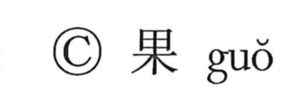

菓

Kun: kashi | On: ka
confectionery ・ sweets
Explanation
菓 is a phono-semantic character: the grass crown signals a plant, while 果 provides the sound ka and originally depicts a fruit borne on a tree. Though its form points to a plant’s fruit, the word came to mean confectionery, reflecting ancient practice in which sweets were made by processing fruits—preserving them with sugar and similar methods. Hence compounds like 菓盤 (kaban, “fruit/sweets tray”) can denote a tray for either fruit or confections, preserving the old link between fruit and sweets.